3位決定戦を含む画面遷移と、優勝演出の主要場面です。画像をクリックすると拡大できます。
準決勝で負けた場合は3位決定戦へ進みます。優勝者は決勝を待つ間に3位決定戦を観戦できます。表彰式・祝福・撮影は1本の演出としてつなぐ想定です。
画像生成ツールで作成したデザイン案です。ゲーム本体の実装・アニメーション動画ではありません。対戦文字・成績・数値は例示で、実装時には大会データから表示します。カスタマイズ・戦闘には既存の共通画面を使用します。
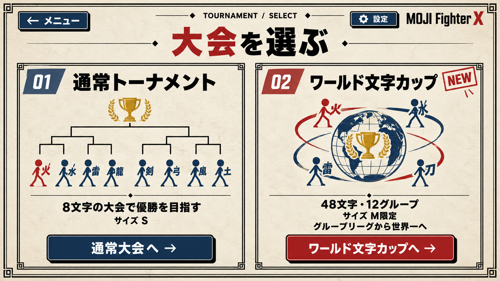
通常大会とワールド文字カップを選び分ける。
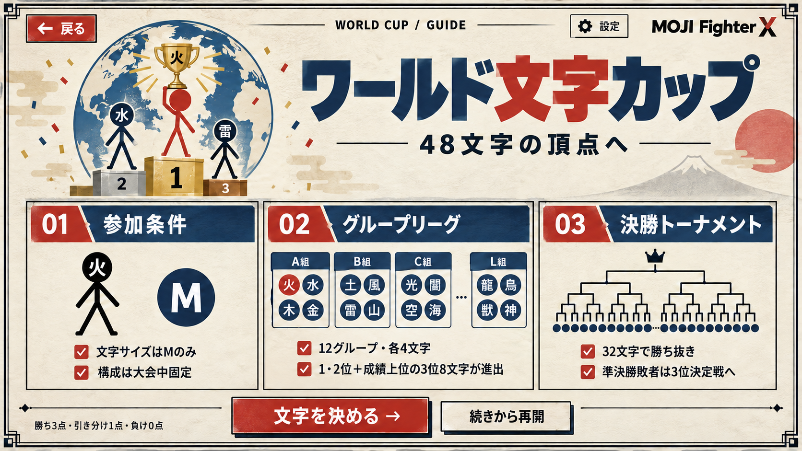
M限定・48文字・12グループ・32文字進出・3位決定戦を説明。
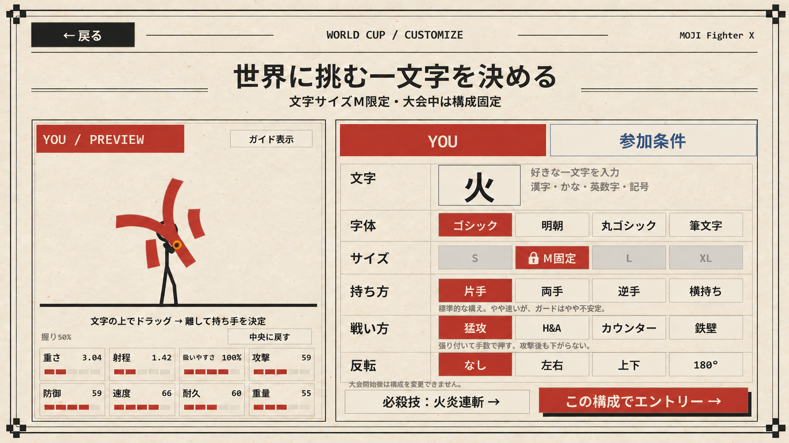
既存の共通カスタマイズ画面。M固定、開始後は構成固定。
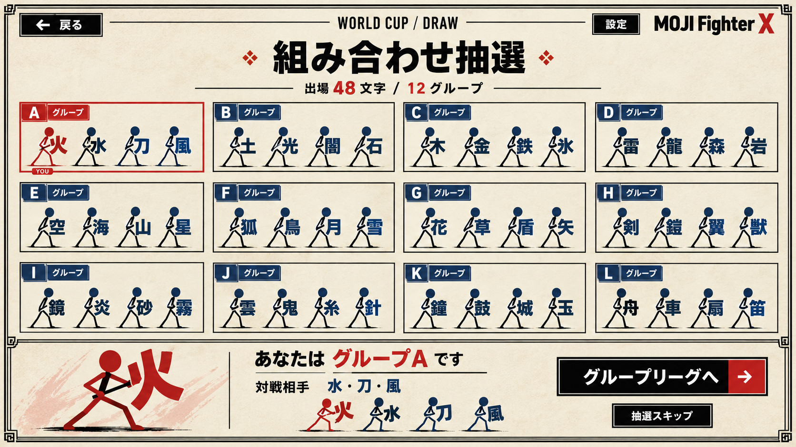
A〜Lの12グループを抽選。自分のグループを強調。
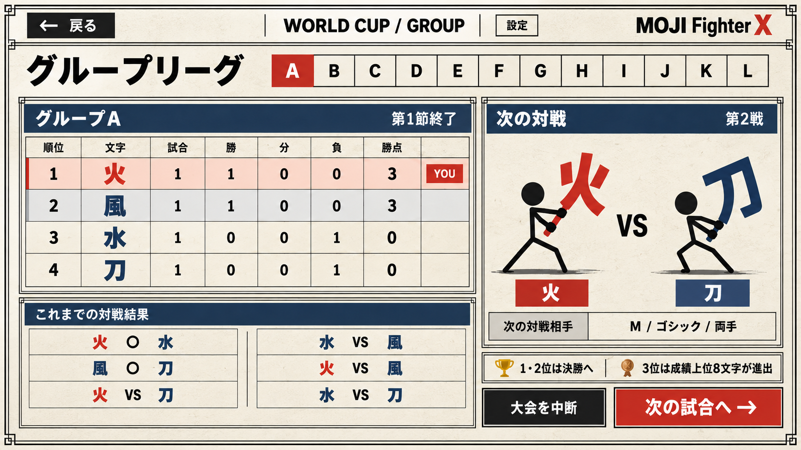
自分のグループの順位、全6試合、次の対戦を確認。
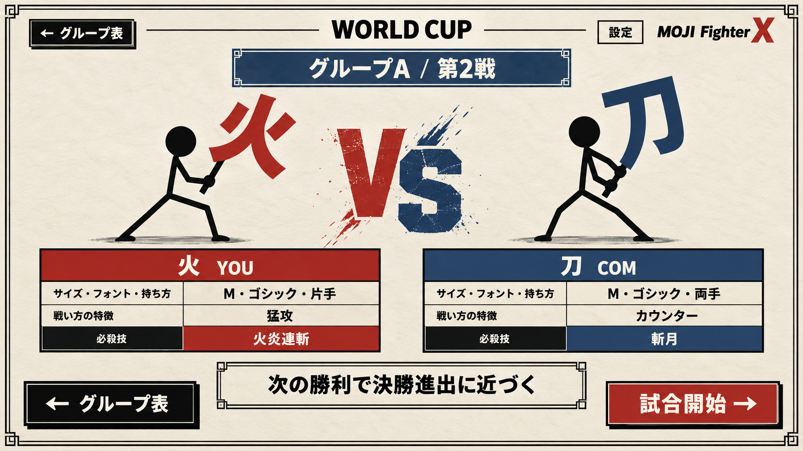
両者の文字と構成を確認して試合を開始。
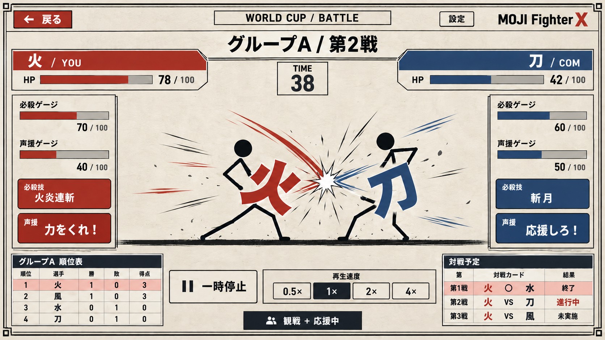
共通の戦闘画面に大会・グループ・試合数を表示。
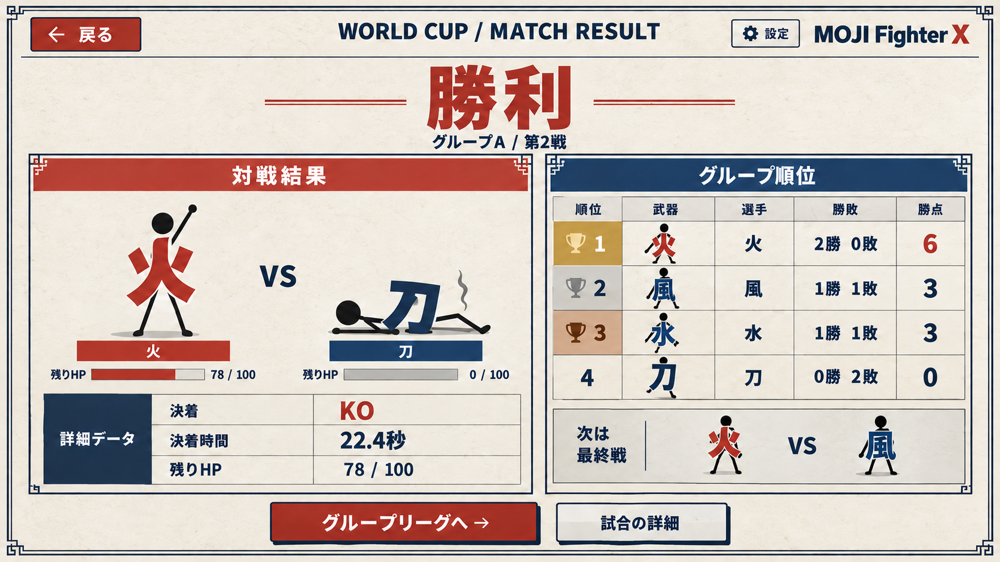
KO・決着時間・残りHPを確認し、グループ表に戻る。
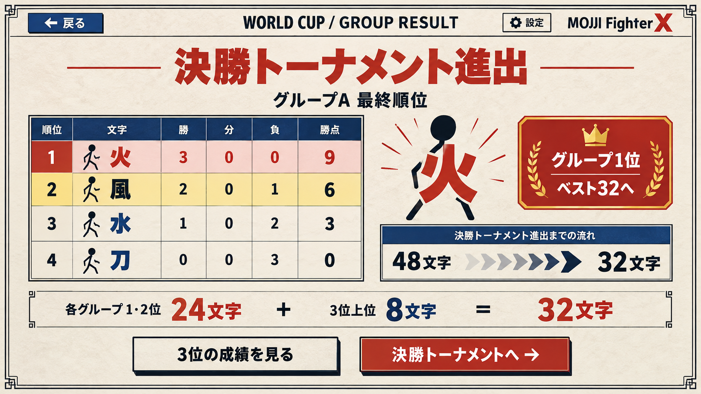
グループ最終順位と決勝トーナメント進出を表示。
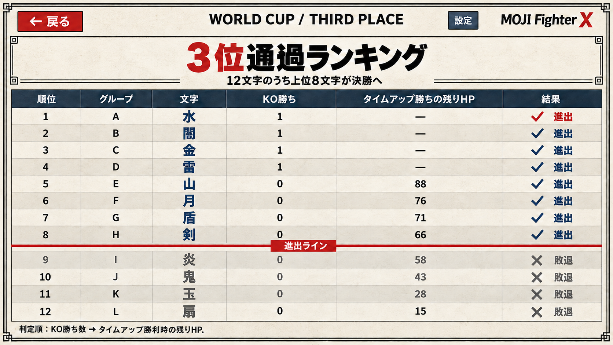
各グループ3位の12文字を比較。上位8文字が進出。
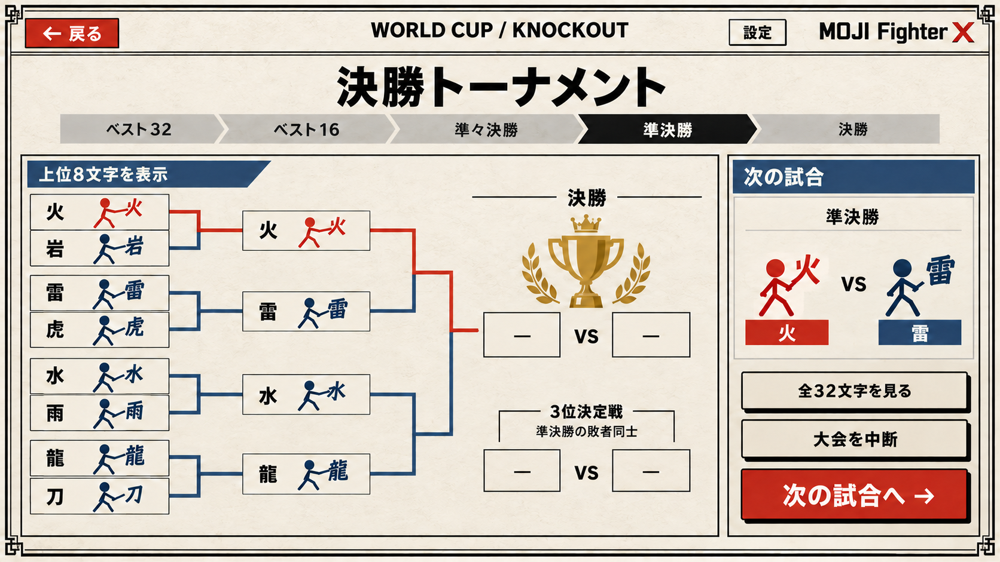
32文字から始まるトーナメント。画像は上位8文字の拡大表示。
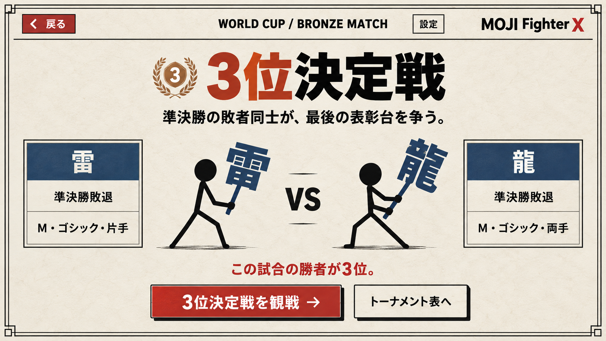
準決勝敗者同士の対戦。プレイヤーが敗者なら自分の試合として進行。
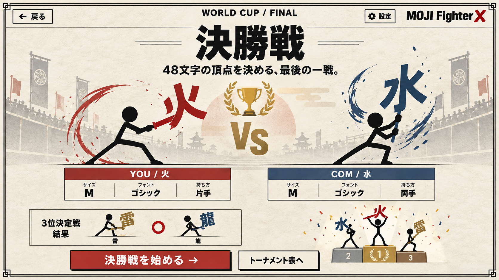
3位確定後に決勝戦。勝者が優勝、敗者が準優勝。
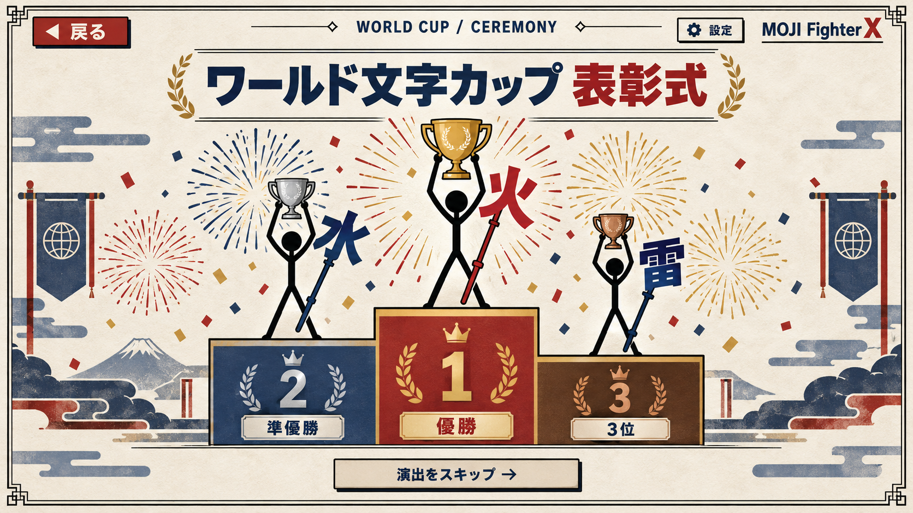
演出案・約0〜6秒：3人が表彰台へ移動し、トロフィーを掲げる。
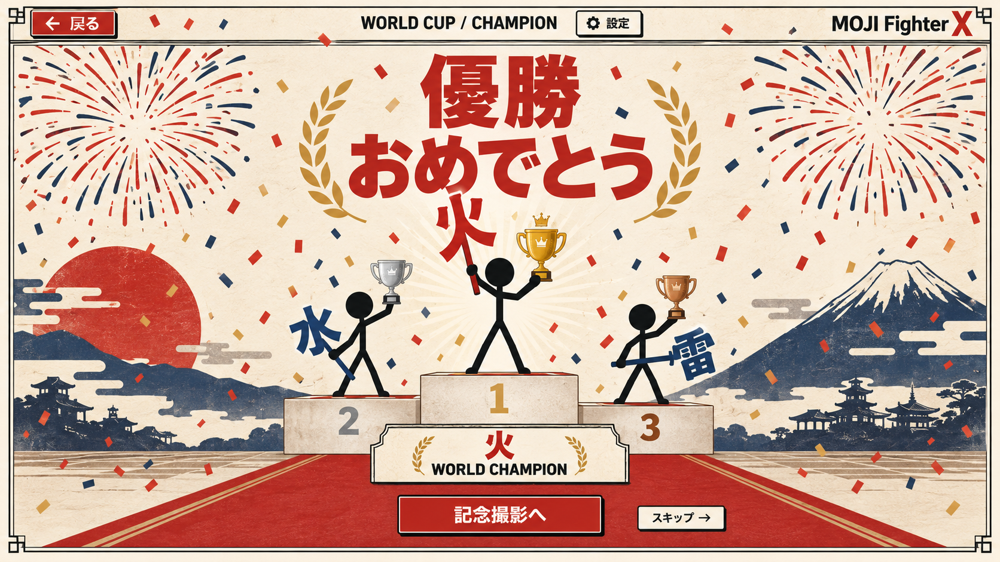
演出案・約6〜10秒：花火が上がり「優勝」「おめでとう」を表示。
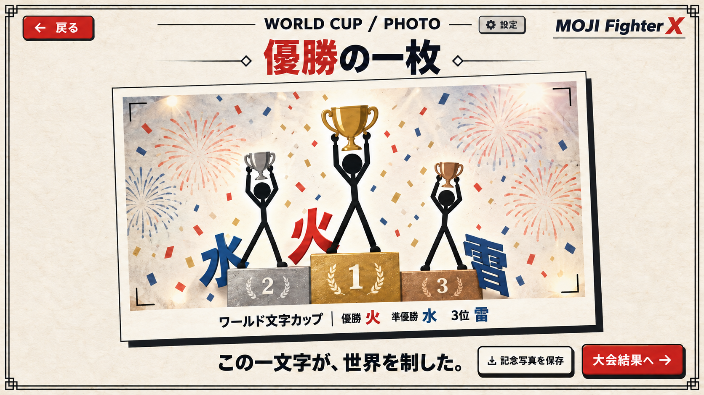
演出案・約10〜14秒：記念撮影のポーズ→フラッシュ→写真で静止。
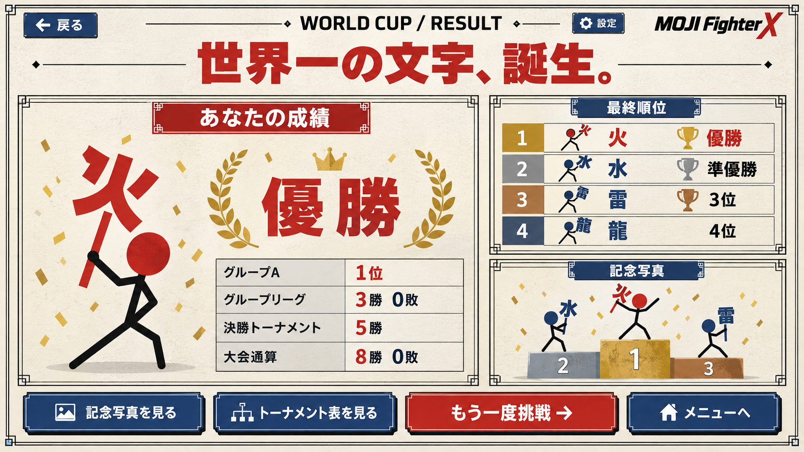
優勝時の最終順位と大会通算成績。記念写真を見直せる。
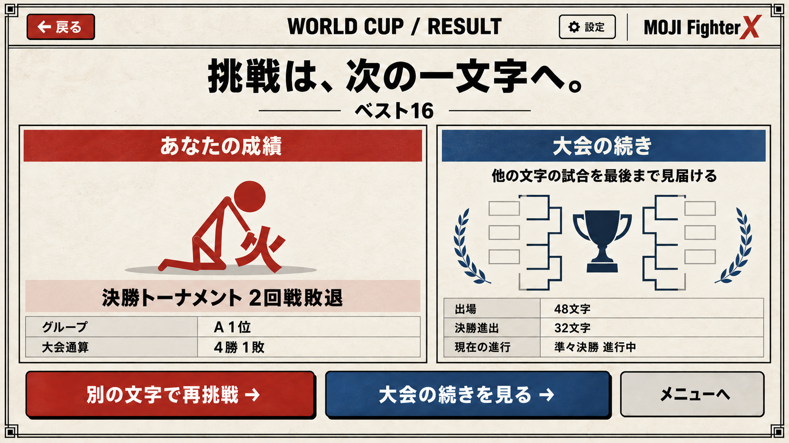
途中敗退時の成績。再挑戦または大会の続きを観戦。